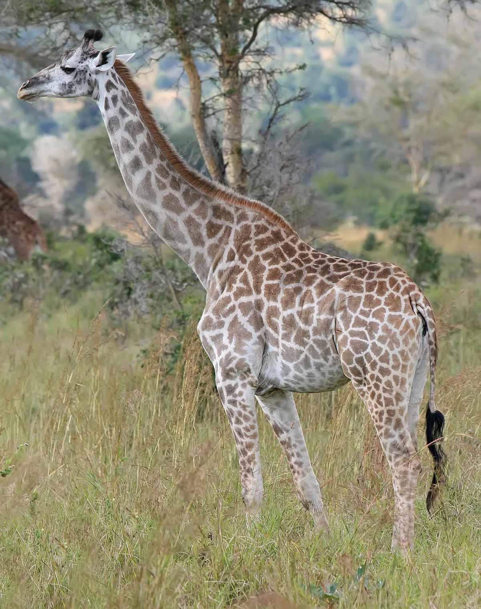
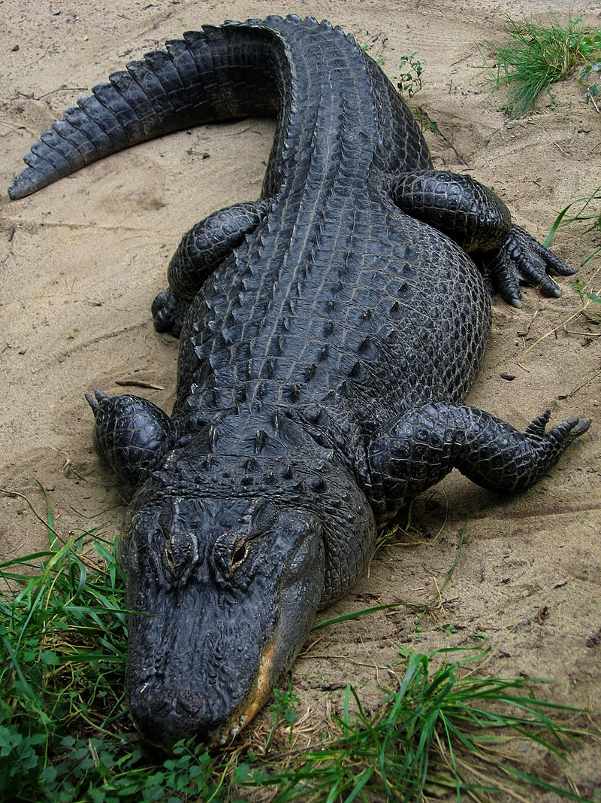

Bears

Bears are mammals that belong to the family Ursidae. They can be as small as four feet long and about 60 pounds
(the sun bear) to as big as eight feet long and more than a thousand pounds (the polar bear). They're found
throughout North America, South America, Europe, and Asia.
Giraffes

The tallest land mammal, with a neck as long as 6 feet, the giraffe is also well known for the unique brown and
white pattern on its coat (“pelage”) and its lengthy eyelashes and legs. Habitat: Giraffes use both semi-arid
savannah and savannah woodlands in Africa.
Lions

Lions have strong, compact bodies and powerful forelegs, teeth and jaws for pulling down and killing prey. Their
coats are yellow-gold, and adult males haveshaggy manes that range in color from blond to reddish-brown to
black. The length and color of a lion's mane is likely determined by age, genetics and hormones.
Monekeys

- Cookie
- Early
- Banana Pudding
Most species are arboreal, using all four limbs to leap from tree to tree. They can sit upright and stand erect.
Most species run along branches rather than swinging arm over arm like the apes. Monkeys are highly social
omnivores, organized in clans as large as several hundred individuals headed by an old male.
Alligators

Alligators have a long, rounded snout that has upward facing nostrils at the end; this allows breathing to occur
while the rest of the body is underwater. The young have bright yellow stripes on the tail; adults have dark
stripes on the tail. It's easy to distinguish an alligator from a crocodile by the teeth.